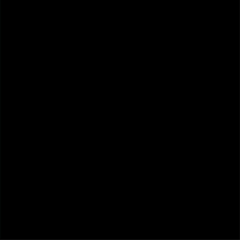
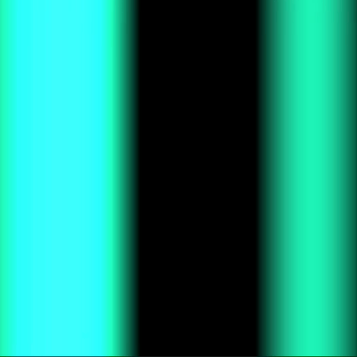
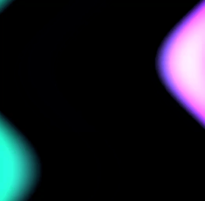
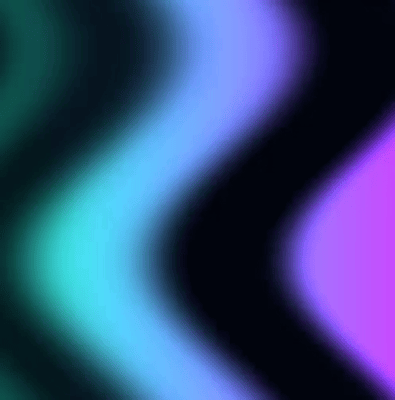

Raumzeitliche Farbveränderungen
Ziel: Erste Darstellung von Polarlichtern
In diesem Praktikum wollen wir Verläufe darstellen, die sich räumlich,
zeitlich und in ihrer Farbe verändern.
Damit wollen wir Polarlichter simulieren.
Das Ergebnis soll dann in etwa wie die folgende Grafik aussehen:

Vorbereitung
Die folgenden Aufgaben setzen voraus, dass Sie die zugehörigen
Vorlesungmaterialien vollständig durchgearbeitet haben:
Aufgaben
Die folgenden Teilaufgaben leiten Sie sukzessive zum Ziel. Ihre Lösungen können Sie in
diesem Editor interaktiv entwickeln und
testen.
- Nachthimmel
Legen Sie einen dunklen Hintergrund an, der zunächst den
gesamten Canvas bedeckt. Initialisieren Sie in der main-Funktion die
Variable uv so, dass jeder Pixel eine positionsabhängige 2D-Koordinate im
Bereich [-1, 1] erhält. Dazu müssen Sie den Wertebereich
von [0, 1] auf [-1, 1] transformieren.

- Farbverlauf
Erzeugen Sie mit Hilfe der Sinusfunktion einen
eindimensionalen Farbverlauf. Legen Sie für Amplitude
und Frequenz bitte schon Parameter fest. Variieren Sie
Amplitude, Frequenz und Farbe, sodass Sie den
folgenden Verlauf erhalten:
- Zeitlich veränderlicher Farbverlauf
Nutzen Sie die Uniform-Variable u_time in Kombination
mit der Sinusfunktion, um einen zeitlich veränderlichen Verlauf
zu simulieren. Beziehen Sie die Zeit (u_time) mit als
Parameter ein (siehe auch:
Beispiel).

- Überlagern von Farbverläufen
Um unseren Polarlichtern etwas näher zu kommen, wollen wir nun
mehrere Sinusfunktionen überlagern. Addieren Sie dazu die Funktionswerte
von drei Sinusfunktionen, die alle die Zeit t verwenden aber unterschiedliche
Parameter nutzen, z.B.:
Für
x müssen Sie die entsprechenden Koordinaten von gl_FragCoord
verwenden. Das Ergebnis sollte in etwa so aussehen:

- Wellenförmiger Verlauf
Aktuell haben wir noch ein Streifenmuster.
Polarlichter
breiten sich aber eher wellenförmig am Himmel aus. Diesem Effekt wollen wir nun etwas näher kommen,
indem wir eine sinus-förminge Schwingung zur x-Koordinate (gl_FragCoord) addieren. Verwenden Sie
als Parameter für die sin-Funktion die gewichtete y-Koordinate sowie die Zeit, ebenfalls
gewichtet. Für die Gewichte bieten sich Werte zwischen bspw. 1.0-5.0 an. Der Funktionswert (von sin)
sollte dann erneut mit einem Faktor zwischen 0.0-1.0 gewichtet werden. Variieren Sie die
Gewichtungsparameter und beobachten Sie den Effekt. Sie sollten in etwa folgende Darstellung
erreichen:
- Verlauf über mehrere Dimensionen
Wir simulieren unsere Polarlichter bisher nur in einer Dimension (x). Bitte erweitern Sie
den Effekt nun auch auf die zweite Dimension (y). Sie müssen dazu den Effekt der vorhergehenden Aufgabe
auch auf die y-Koordinate anwenden, allerdings unter Nutzung der x-Koordinate (als Parameter) sowie der
Kosinusfunktion (cos) anstelle der Sinusfunktion. Gewichten Sie die x-Koordinate sowie die
Zeit wieder - nehmen Sie hierfür aber etwas andere Werte als in der vorhergehenden Aufgabe. Beobachten
Sie das Ergebnis genau - der Effekt ist nur relativ klein. Sie sollten in etwa folgende Ausgabe erhalten:
- Verlauf mit Farbvariation über Zeit
Polarlichter stellen häufig auch unterschiedliche Farben dar, was aus physikalischer Sicht
vor allem auch mit den Anteilen von Stickstoff- und Sauerstoffmoleküle (und weiteren Faktoren)
zusammenhängt (siehe auch: Wikipedia).
Diesen Effekt wollen wir nun auch simulieren. Verwenden Sie dazu die bereits eingeführte
mix-Funktion.
Wählen Sie hier für die ersten Parameter zwei geeignete Farben, z.B. grün und violett
oder auch rot. Der dritte Parameter sollte eine variable
Größe zwischen 0..1 sein, da diese als Gewicht für die Farbinterpolation verwendet wird.
Dafür können Sie bspw. die x- bzw. y-Koordinate (gl_FragCoord) nutzen. Es sind aber auch
alternative Ansätze möglich. Versuchen Sie auch durch Gewichte (Multiplikation)
und Offsets (Addition), das Ergebnis zu beeinflussen. Seien Sie hier gern kreativ 🎨!

- Weichere Übergänge erzeugen und Farbsättigung vermeiden
Aktuell sieht man noch z.T. relativ starke Übergänge. An einigen Stellen können
auch Farbsättigungen auftreten, wodurch Pixel weiß dargestellt werden.
Diesen Effekt können Sie bspw. mit der Funktion
smoothstep
abschwächen. Das Ergebnis könnte dann in etwa wie folgt aussehen:

- Polarlichter auf Horizont begrenzen
Begrenzen Sie bitte Polarlichter auf eine Horizontgrenze, denn diese sollen
nicht den gesamten Canvas, sondern nur den Himmel bedecken. Das Ergebnis
könnte in etwa so aussehen:

Herzlichen Glückwunsch! Sie haben es geschafft -
wir kommen unserem Polarlicht-Nachthimmel immer näher 😀!
{kind=link}